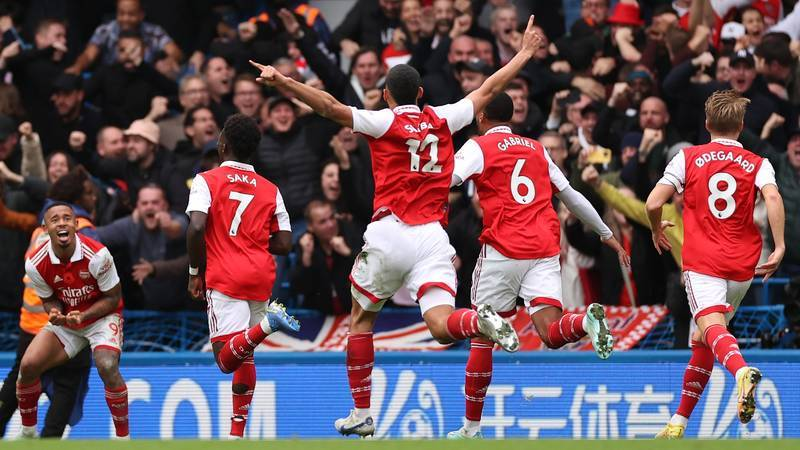

It was a start full of intensity from the visitors, Ben White had our first two sighters on goal – the first blazed over, the second dragged just wide.
Gabriel Martinelli was next to try his luck, shooting over from the edge of the area. Gabriel Jesus had a shot charged down when he burst into the box, weaved past two defenders but Thiago Silva slid in to block.
Our best move of the half resulted in an opportunity for Jesus. He couldn’t stretch quite enough to get his head on the end of a Martinelli cross though. He had beaten the offside trap to find the space, but maybe just checked his run at the vital moment.